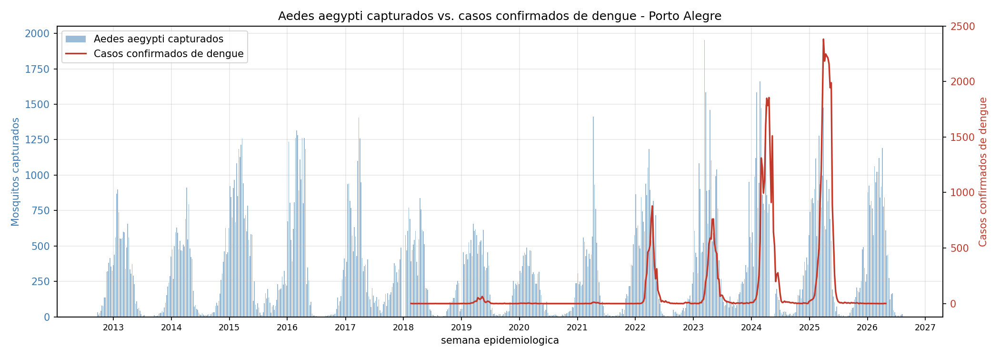

Mestrado PPGC · UFRGS · Porto Alegre, RS · Próximos passos
Próximos passos
O que os dados mostram a olho nu

Barras azuis: mosquitos capturados. Linha vermelha: casos confirmados. Em 2022, 2023, 2024 e 2025 a subida do mosquito vem antes. ⚠️ Leitura de gráfico — a defasagem ainda não foi medida.
Por que a questão segue aberta
Sobre um modelo que já tem clima e histórico de casos, a armadilha não melhora a previsão.
Que o mosquito não influencia a doença. Sem vetor não há transmissão — isso é biologia.
Prevemos a consequência
Quando o caso é notificado, a transmissão já aconteceu. A causa é a proliferação do vetor.
O histórico já diz tudo
Os casos recentes explicam 91% do acerto em uma semana. Redundante ≠ irrelevante.
Paramos em 3 meses
A defasagem do gráfico parece maior. Efeito fora da janela medida não aparece.
Só a dengue tem alvo
O mesmo mosquito transmite quatro doenças. Três ficaram de fora da conta.
Mosquito não é vírus
A armadilha conta mosquito, não mosquito infectado. Pode haver muito vetor e pouco vírus circulando — e o PCR do mosquito deixou de ser feito.
O que muda na próxima etapa
| Hoje | Próxima etapa | |
|---|---|---|
| Alvo primário | casos de dengue | casos das quatro arboviroses, previstos a partir da proliferação do vetor |
| Alvo secundário | — | a própria proliferação do vetor, a partir de clima e captura |
| Horizonte | até 3 meses | até 6 meses |
| Treino e teste | toda a série disponível | treinar em 2022-2024, prever 2025 |
| Pergunta | o vetor melhora a previsão? | qual é a defasagem entre as duas curvas? |
| Espécie | Aedes aegypti | Aedes aegypti — Culex fica de fora |
Um único vetor transmite as quatro. Sem transmissão pessoa a pessoa, sem outro artrópode. Somar não mistura fenômenos — agrupa manifestações do mesmo evento entomológico. ⏳ Cada decisão dessas precisa de referência bibliográfica que a respalde.
A literatura que falta levantar
Ovos que atravessam o inverno
A temporada termina com ovos que não eclodiram e seguem viáveis até a seguinte. Uma temporada intensa pode carregar risco para a próxima.
Transmissão pelo ovo
O mosquito pode já nascer com o vírus, sem precisar picar alguém doente antes. Muda a dinâmica clássica de transmissão.
Criadouro menos exigente
A dependência de água parada e limpa não é mais o que era. Afeta onde o vetor consegue se desenvolver.
Limiar térmico do ovo
Abaixo de certa temperatura o ovo inviabiliza — a hipótese que explica por que há regiões estéreis ao vetor apesar de clima aparentemente favorável.
Se a biologia do vetor mudou, o mesmo número de mosquitos não significa o mesmo risco em 2013 e em 2026. Ler a série de 14 anos sem isso é tratar como homogêneo um fenômeno que não é.
O que precisa ser verificado antes
| Risco | O número que já se conhece | O que medir antes |
|---|---|---|
| Agregar soma pouco | chikungunya: dezenas de casos zika: zero desde 2022 | o ganho real de volume |
| Poucas epidemias no teste | a janela 2022 a 2025 deixa ~1 episódio | se a janela sustenta conclusão |
| 6 meses pode não alcançar | a memória dos casos já é nula em 3 meses | o horizonte útil para o vetor |
O resultado do cenário adotado continua válido. O que muda é alvo, horizonte e conjunto de doenças — e cada teste exigirá pré-declaração escrita antes de rodar.
O desafio da temporada 2026-2027
Gerar a curva prevista
Captura de mosquito para a temporada 2026-2027.
Comparar com o real
Previsão registrada antes, sem ajuste posterior.